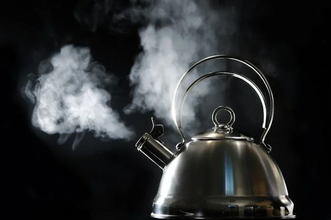

En esta página encontraremos las palabras más comunes para la letra E
1. Ebanista: Persona cuyo oficio es el tallado de la madera.
2. Ebullición: Estado en el que una molécula o grupo de ellas alcanza la energía suficiente como para superar la presión del medio circundante.

3. Entrecejo: Parte del rostro humano situada entre la nariz y la frente, entre las cejas.
4. Ebriedad: Estado de intoxicación producido por la ingesta de alcohol, que provoca una alteración de la conciencia.
5. Entrecava: Acción de levantar y mover ligeramente la tierra con alguna herramienta, de forma superficial.